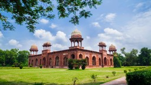
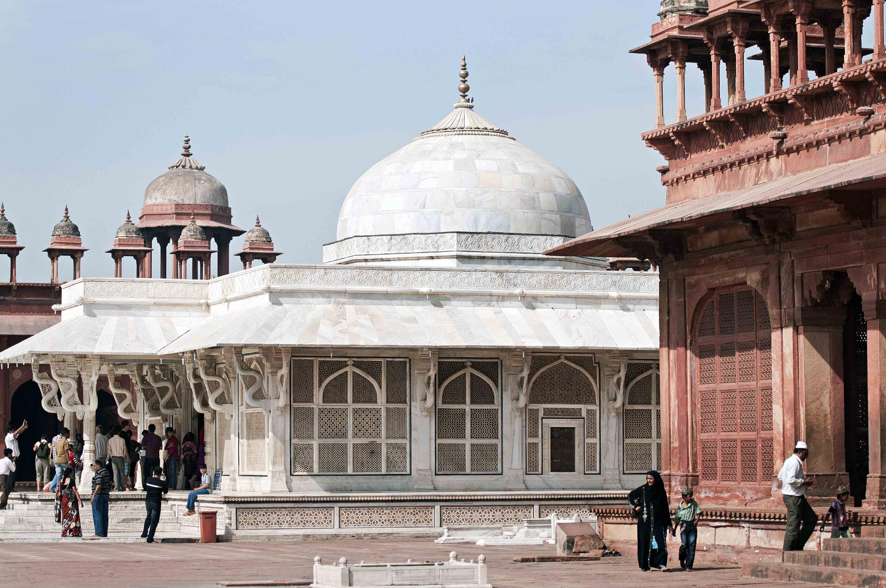
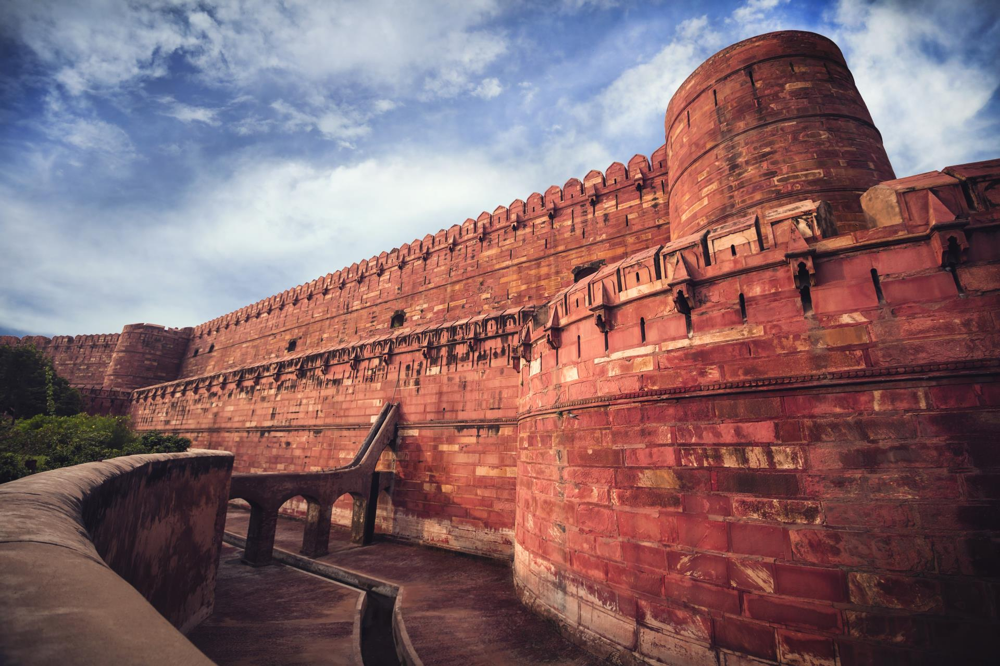

The city of the Taj Mahal, one of the seven wonders of the world, Agra in Uttar Pradesh is India's most popular tourist destination. Steeped in history, this ancient city is dotted with monuments, architectural wonders and beautifully landscaped gardens, which are remnants of the Mughal reign's majestic legacy. The city also enjoys a vibrant culinary scene while preserving its exquisite arts and crafts.
 This unique red sandstone tomb was built in the memory of Mughal emperor Akbar's wife, Mariam-uz-Zamani Begum, also known as Hira Kunwari, Harka Bai or, most popularly, Jodha Bai. She was originally a Rajput princess, and was the first Rajput wife of emperor Akbar. While the Mughal ruler already had several other wives before he married her, she went on to become the mother of the heir to the Mughal throne, Jehangir. Jodha Bai was also referred to as the Queen Mother of Hindustan during Akbar’s reign as well as during the reign of her son, Jehangir.
 Mughal emperor Akbar built his capital at Fatehpur Sikri between 1572 and 1585 AD It was constructed using red sandstone. It is said that the emperor, who wished for a son, went to Sikri to get blessed by sufi saint, Sheikh Salim Chishti. He was soon blessed with a son and was prompted to establish his capital here, building a beautiful mosque and three palaces, one each for his three favourite wives. He named the city Fatehpur Sikri, meaning the city of victory. He also named his son Salim, after the saint who had blessed him.
 Built by Mughal emperor Akbar in 1565 AD, Agra Fort is a majestic sandstone built as an ode to the magnificence of the Mughal empire. Encompassing within its 2.5-km-long enclosure walls a stunning imperial city, the fortress is shaped like a crescent, its eastern wall flanked by River Yamuna. It is said that the construction of the fort was originally begun by emperor Akbar, but completed by his grandson Shah Jahan, who added most of the marble monuments here.